5 Days in Sicily: Culture, Coastlines, and Culinary Delights

In June 2025 we embarked on a 5-day road trip across Sicily, immersing ourselves in the island's stunning blend of ancient history, charming towns, and coastal beauty. We started in Palermo, wandering its bustling markets and Arab-Norman architecture, then relaxed by the sea in Cefalù. From there we headed south to Agrigento to marvel at the awe-inspiring Valley of the Temples. We continued east to the picturesque streets of Taormina and the crystal-clear waters of Isola Bella, before exploring the volcanic energy of Catania and the ancient Greek heritage of Syracuse. On our way back west, we explored Trapani and the medieval hilltop town of Erice. Along the journey, we indulged in every iconic Sicilian dish—from cannoli to arancine, pasta to granita—each bite a celebration of Sicily’s rich culinary heritage.
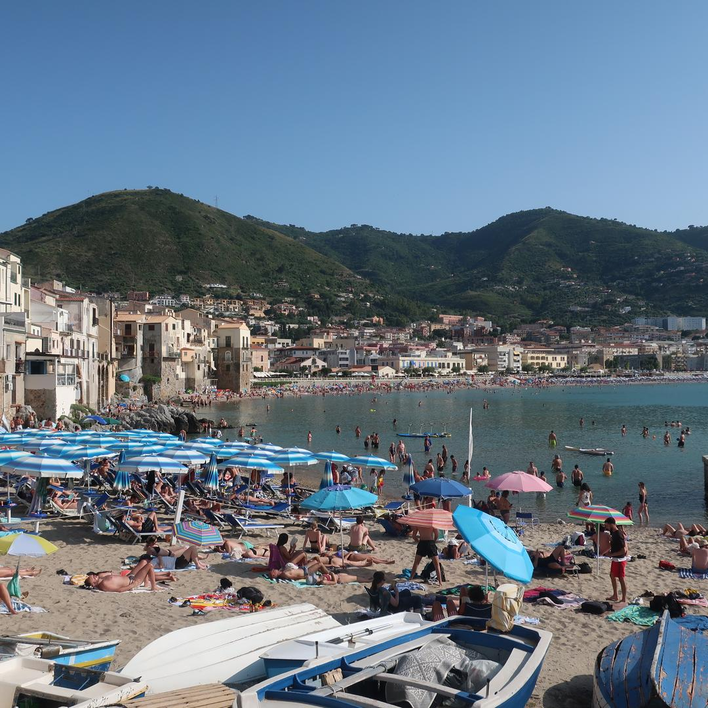
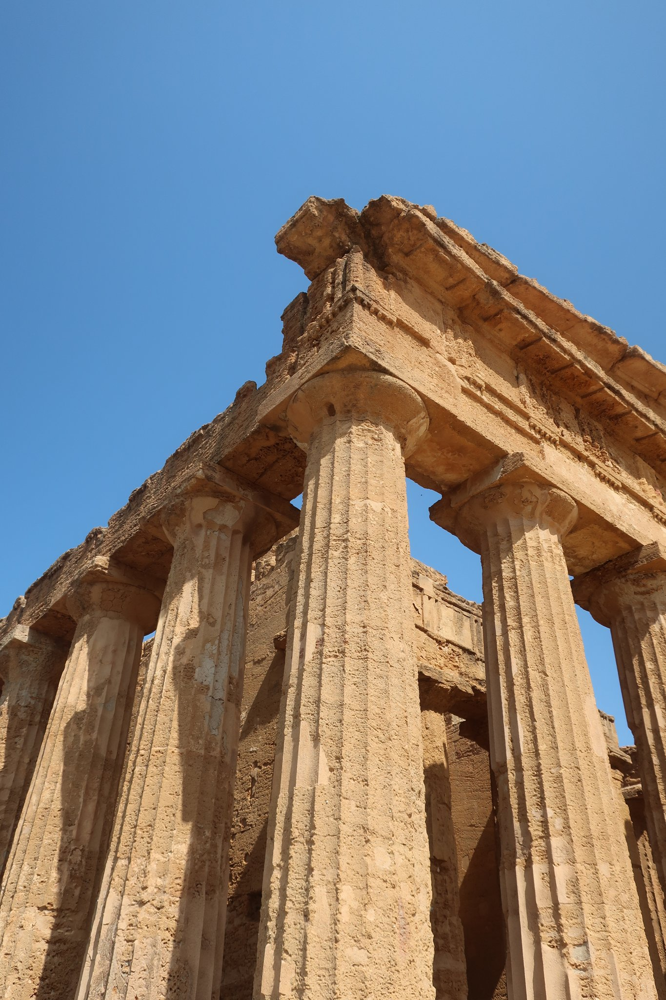
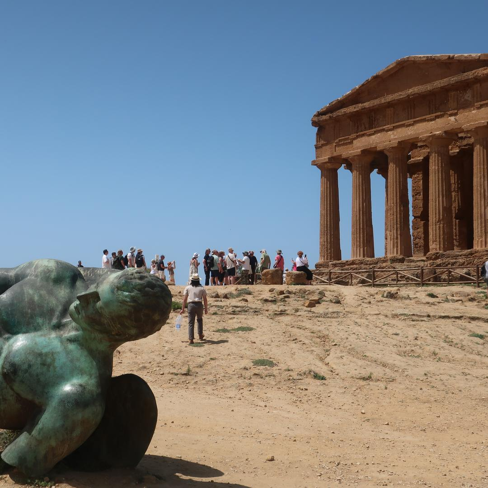
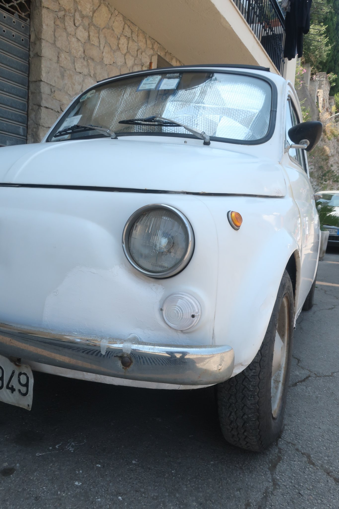
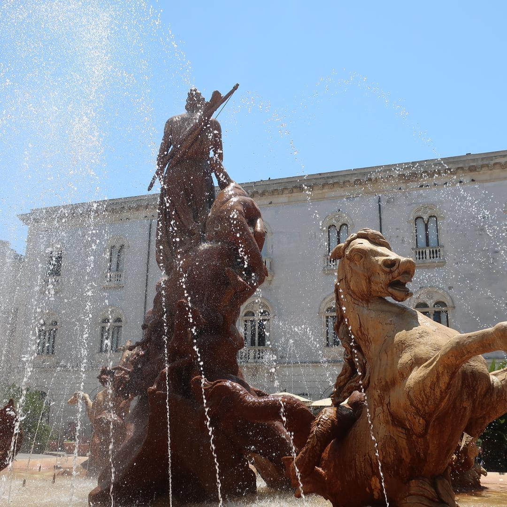
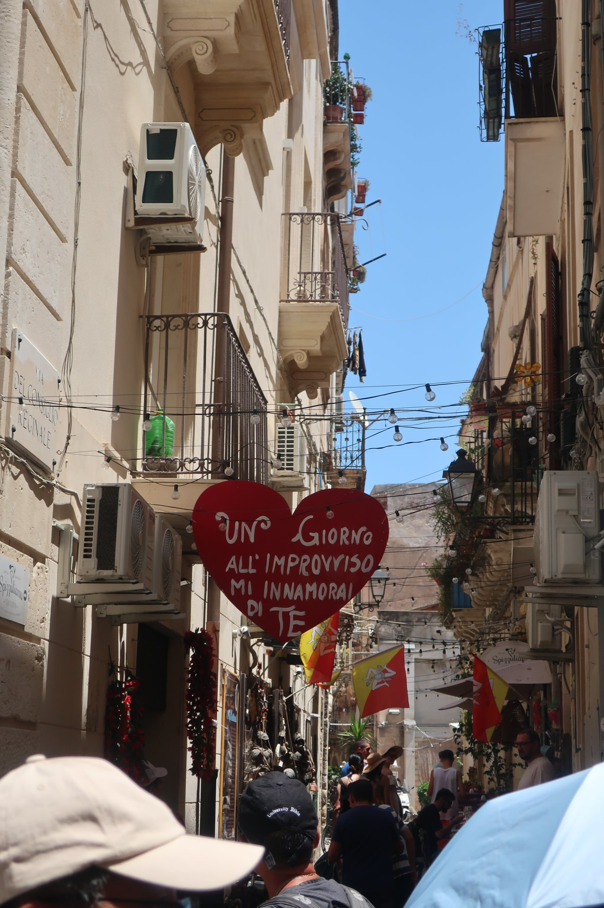
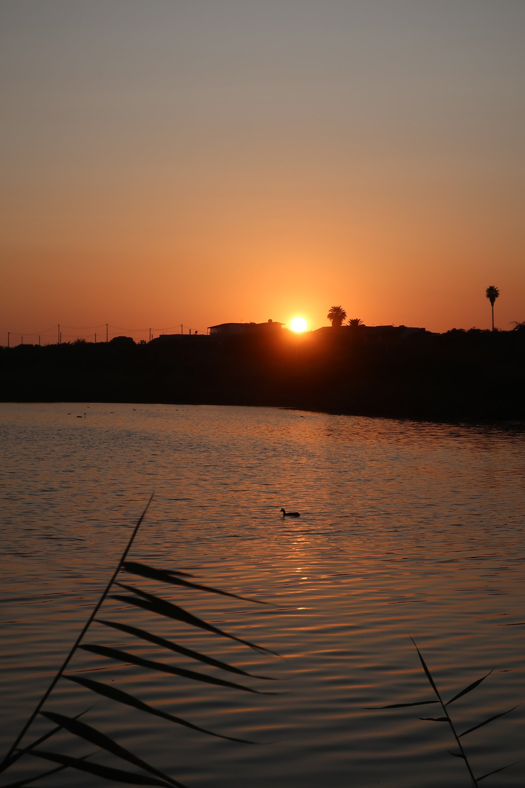
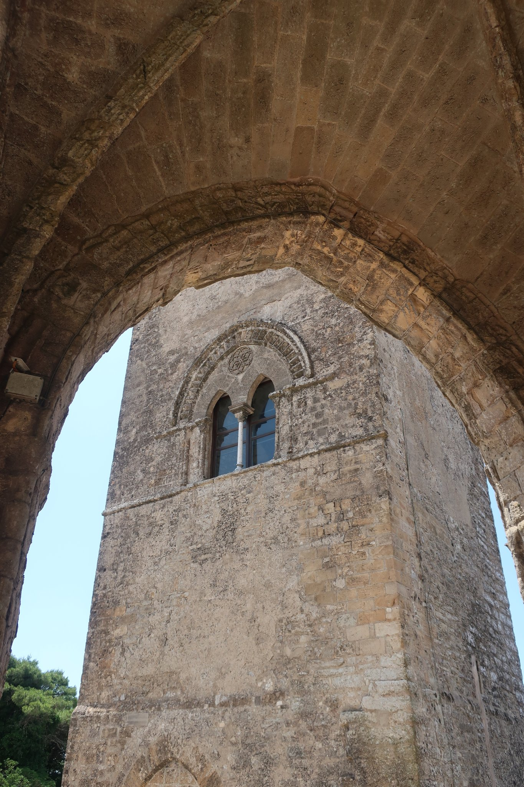
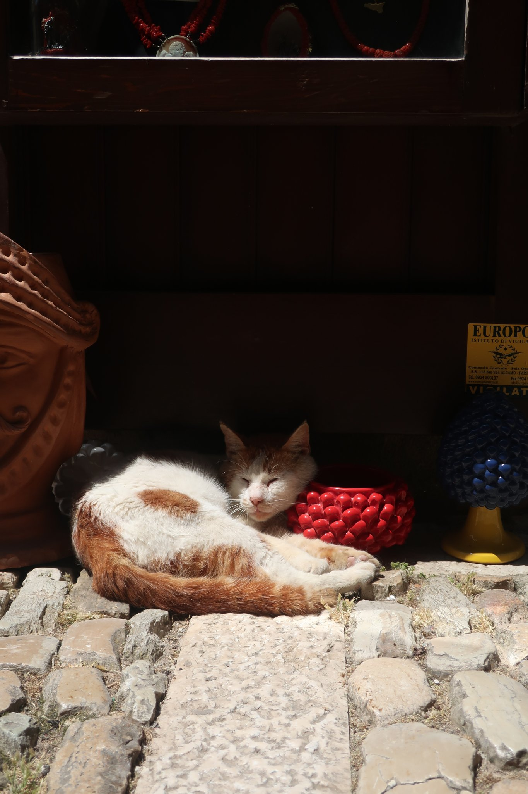
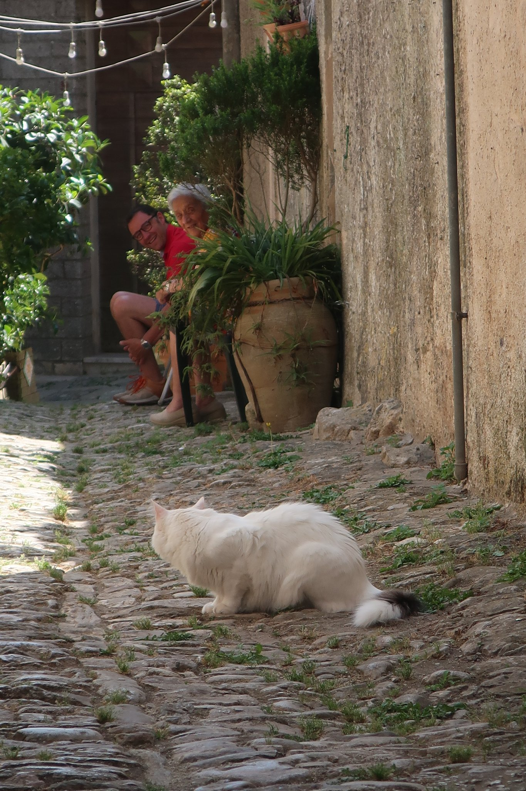
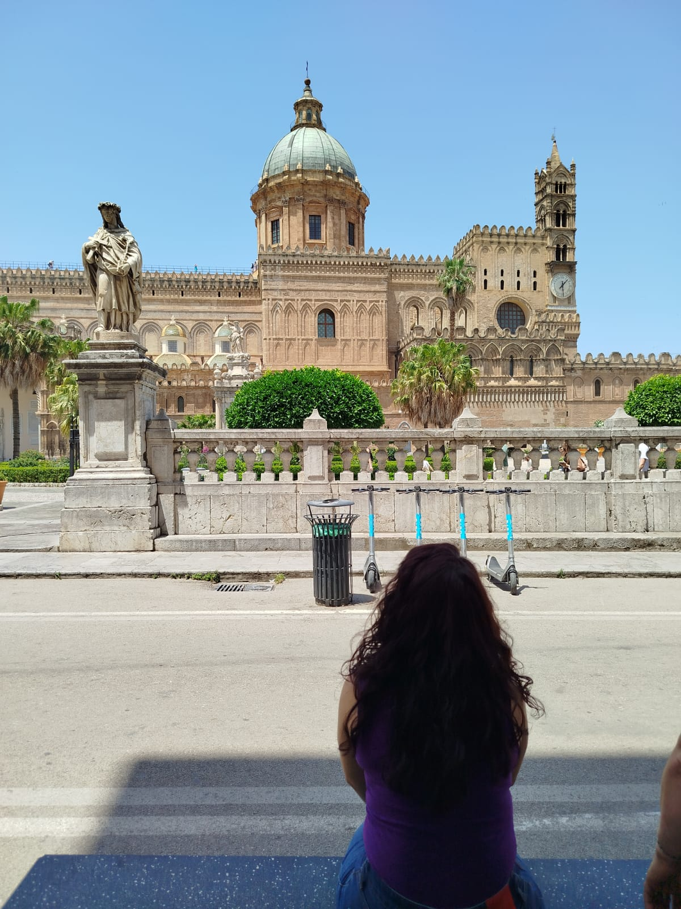
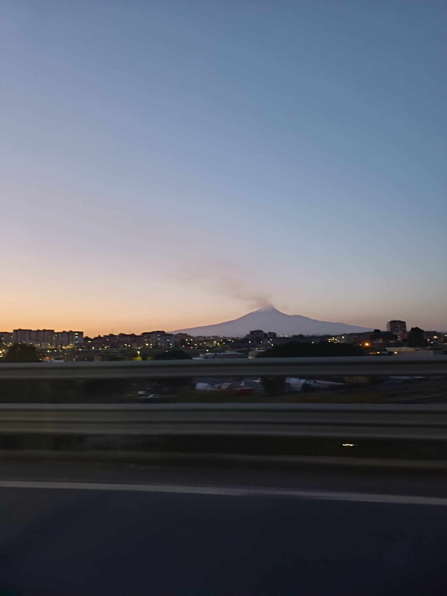
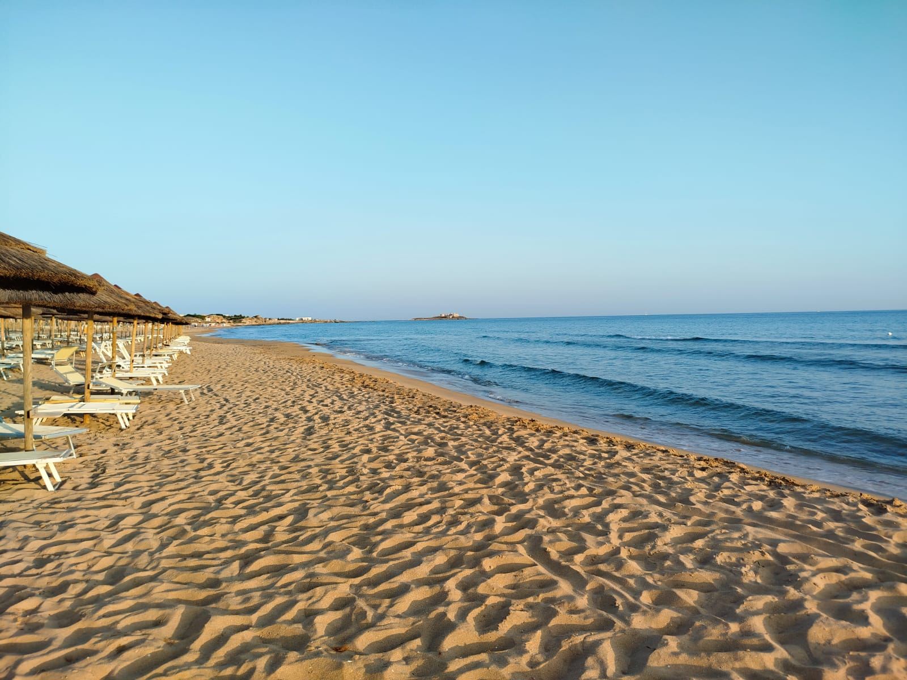
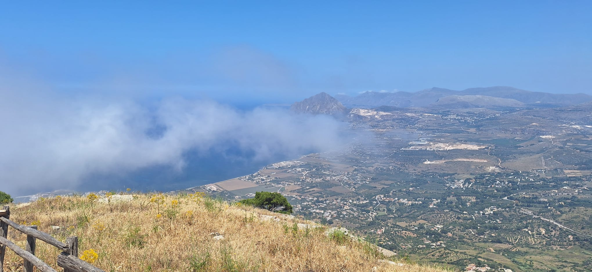
 Bordeaux
Bordeaux
 Tallin & Riga Christmas Markets
Tallin & Riga Christmas Markets
 Barcelona, Vic & Girona
Barcelona, Vic & Girona
 Skopje, North Macedonia
Skopje, North Macedonia